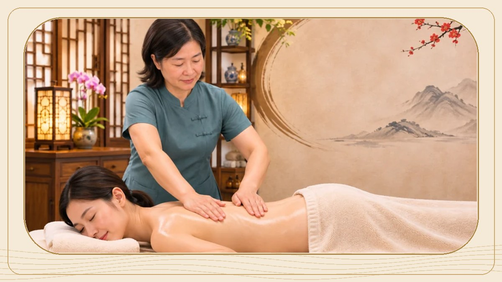

Explore contact and release, sensations, pressure preferences and communication beforehand.
Pressing emphasizes pauses rather than travel distance
In the four brand illustrations, pressing emphasizes relatively concentrated contact and pauses. Compared with a technique that moves across an area, viewers can more readily see when the palm makes and releases contact. This is an observational perspective, not a rule requiring equal duration every time or a basis for judging effects on the body. If you prefer a quiet experience with less variation, use that preference to start an inquiry.
Stationary contact does not require deep force
Even at a relatively fixed point, contact surface, clothing thickness, hand position and current sensations may create different experiences. Steady-looking movement in a video does not mean it feels particularly heavy or light. Do not treat duration or force as the sole measure of professionalism, or endure discomfort for supposed effects. This article offers no instructions on specific locations, depths or seconds.
How to describe preferences before a session
Some people want notice before touch; others care more about sudden changes in pressure. Explain desired contact areas, clothing, covering and areas to avoid. If unfamiliar with technique names, simply say 'I prefer steady contact' or 'I'd like to start gently.' No technical vocabulary is required for communication.
Observe technique on screen rather than guessing sensations
The pressing video is an AI brand illustration; observe changes between touching and releasing, but the camera cannot convey actual pressure. If still unsure, ask about actual arrangements. Images and videos are not genuine service cases and cannot predict individual experiences. Compare the other three styles using the overview and their respective videos.
Put the right to pause first
If uncomfortable during contact, immediately express a wish to change or stop. US NCCIH massage safety information notes that even common techniques are not risk-free, particularly vigorous massage or special physical conditions. Everyday relaxation should not replace medical evaluation. Seek care first for abnormal or persistent discomfort rather than asking for more pressure or time at a point.
An example inquiry
At first contact, for example, say you want to inquire about everyday back relaxation and prefer steady touch through clothing. Then ask whether such an arrangement is available, its time and cost. This gives both parties a clearer starting point without promises of results. You may renegotiate if your preferences change that day.
FAQ: Is a longer pause always better?
No. Pause duration is one way to recognize technique, not a guarantee of effects. Actual arrangements must respect the person's feelings, acceptable boundaries and prior agreement. Changing or stopping unsuitable contact is reasonable. Clear communication matters more than fixed numbers when choosing everyday relaxation.
References
Ministry of Health and Welfare | Advertising reminders for traditional wellness providers(Accessed: 2026-11-26)
US NCCIH | Massage safety information (safety reminders only)(Accessed: 2026-11-26)
This article provides general lifestyle and cultural information, not individual medical advice; it awaits owner approval. Confirm actual services, fees, times and locations by inquiry.